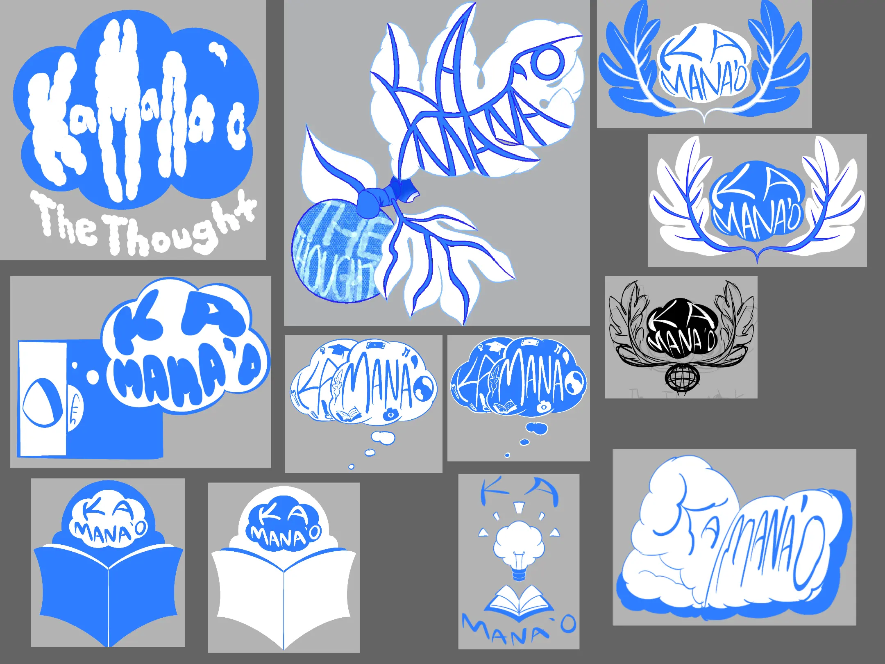
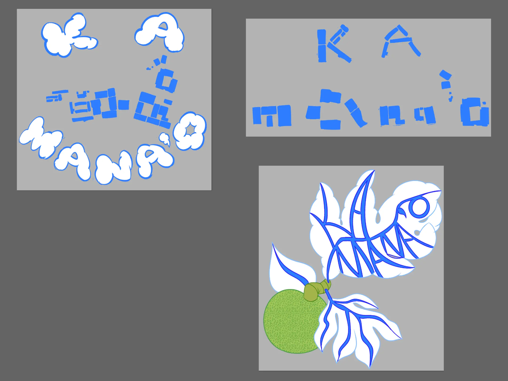
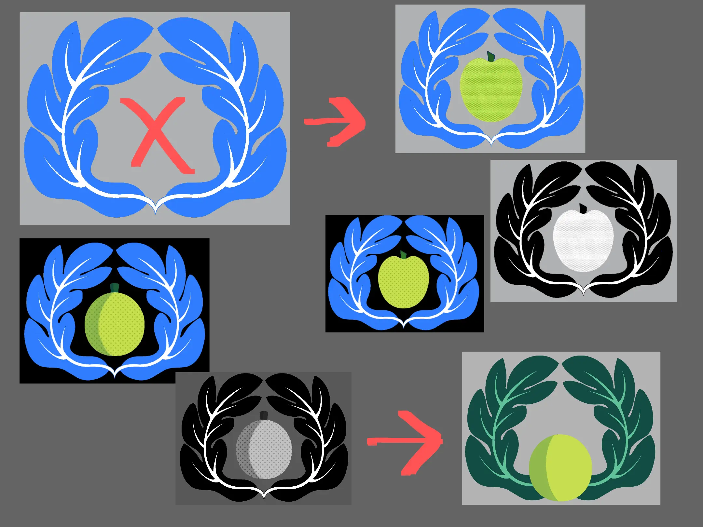
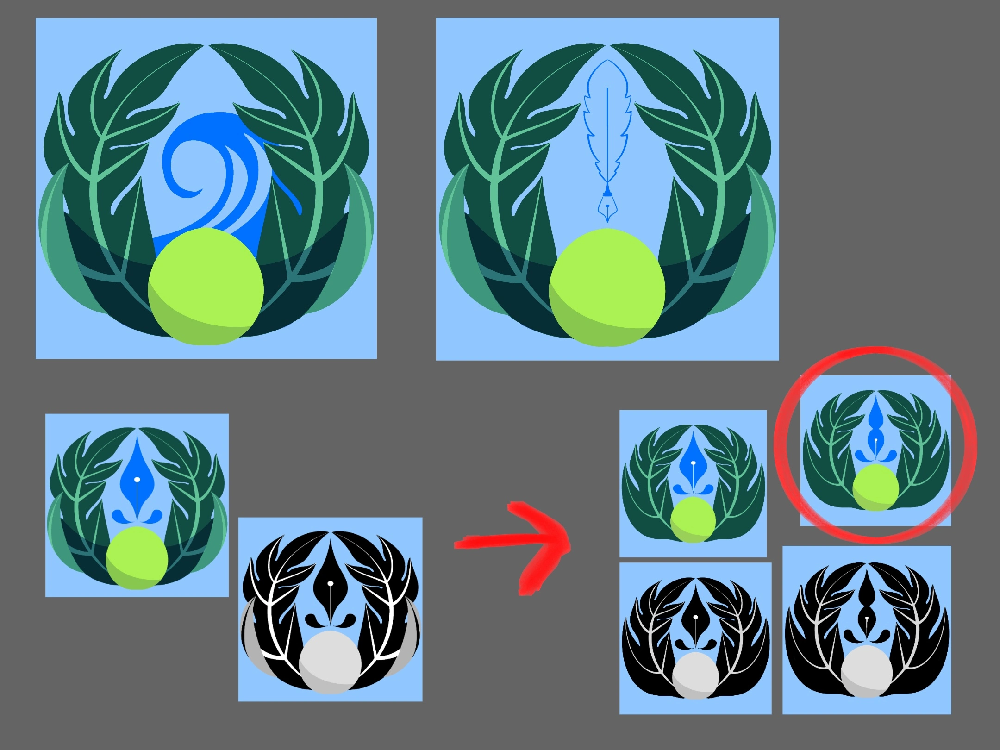
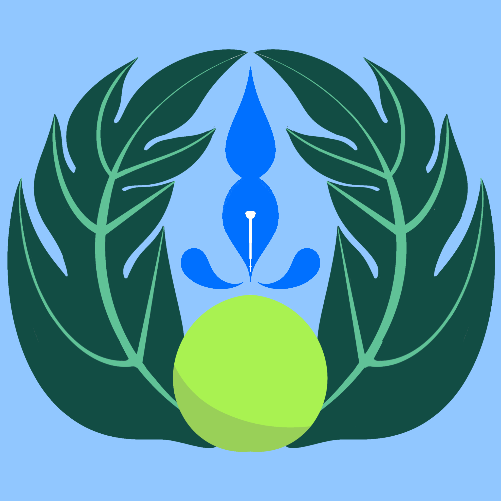

Prior to Process

Before the redesign, Ka Manaʻo’s previous logo relied heavily on text. My colleagues wanted an updated version with stronger visual identity and have it be distinctive from other University of Hawaiʻi student publications. This direction gave me a foundation for understanding what Ka Manaʻo represents and how to reflect that through design.
Project Process
Research
I began by reviewing Ka Manaʻo’s social media, official website, and participating in a Jamboard brainstorming session with the team. From this research, I learned that Ka Manaʻo strives to highlight different perspectives from its staff creating content to LCC students submitting creative work to the publication’s semesterly Creative Art & Writing Contest. The publication also informs students about local, UH-system, and Hawaiʻi-related news and trends.
Sketching
My initial drafts explored the literal meaning of “Ka Manaʻo,” such as thought bubbles, lightbulbs, and occasionally the mind itself, indicating ideas and thinking. I also added symbols that relate to the publication, including magazines and the ʻulu (breadfruit), as they are heavily associated and grown within the LCC campuses. These sketches were created in Procreate.
As this was my first major design task, I wasn’t entirely focused on simplicity and more on distinct visual identity on an extreme level, which was one of my biggest mistakes. While the team liked my concepts, they admit that many of them were too abstract or visually complex, and my color palette was limited to blue and white. They suggested making the ʻulu green, matching the real life fruit, and exploring design elements inspired by the campus layout or architecture. After attempting a campus-layout design that didn’t work well visually, my team preferred a revised version of the ʻulu concept.
Afterwards, we reviewed my earlier drafts and decided to simplify the one with the ʻulu leaves by removing bubble text between the leaves and refining the ʻulu shape. I experimented with halftone textures, but we ultimately removed them to keep the design clean. The ʻulu was reshaped into a circle and repositioned between the leaves for accuracy and balance.
With help from my colleagues and one of my parents, I incorporated a symbol above the ʻulu to represent the publication’s focus on writing: a fountain-pen-like shape created using water droplets. I chose water imagery as a nod to Pearl City’s lagoon harbor near LCC and used their main colors to represent the publication’s home campus. I also adjusted the shapes and colors of the leaves to make them more recognizable and dynamic. After creating multiple versions, my team selected the two-drop pen design for its clarity and cohesion.
Finalizing
Once the draft was approved, I informed my colleagues that I will recreate the logo in Adobe Illustrator for higher quality. The most challenging part was replicating the ʻulu shading while keeping the shapes clean and contained. Using the Pen Tool and Direct Selection Tool, I refined the outlines, shading, and leaf structure until the final design was complete.
Results
After completion, the new Ka Manaʻo emblem became widely used on the publication’s official social media and appeared throughout its printed magazines. I was later asked to create additional versions of the logo for a few side projects, including text-accompanied formats.
This project taught me the importance of simplicity, visual identity, and careful use of shapes and color. It significantly influenced my design approach moving forward, as well as how vital teamwork and feedback is when it comes to branding design.